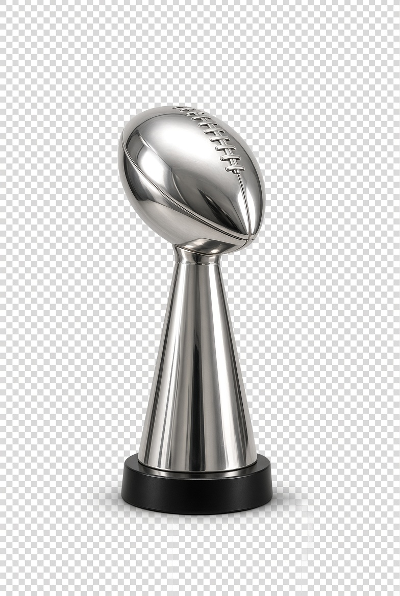

Live Streams
Welcome to FNSL.TV. For the realest FNSL experience, watch the games as they happen.
📺
Checking for live streams...
FNSL channels are monitored automatically when configured.
😴
No streams currently live
When league members go live on Twitch, they'll appear here. You can also add channels in the config.
Around the FNSL
Cycle
M27 - S1
Season 58
League Leaders

Defending Champ
—
Super Bowl Champions
Coach Ocinco